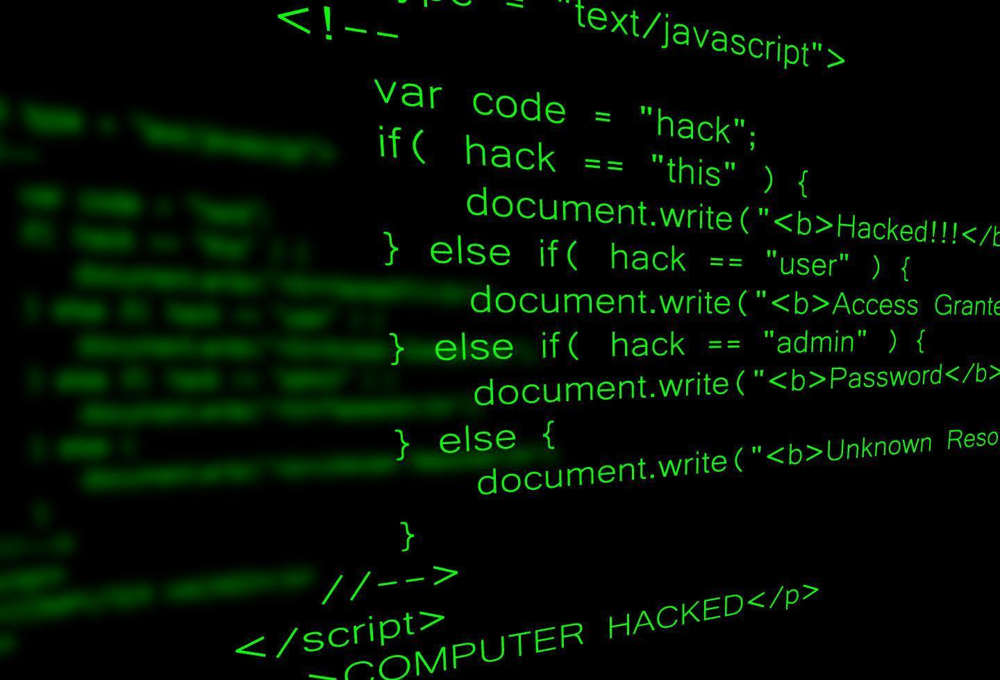

Home
Change is coming. Join us.
Hacking
Hacking is the unauthorized access to or control over computer systems or networks. It can be used for both malicious purposes and to uncover vulnerabilities for improving system security. Ethical hackers, also known as white-hat hackers, use hacking skills to identify and fix security flaws.